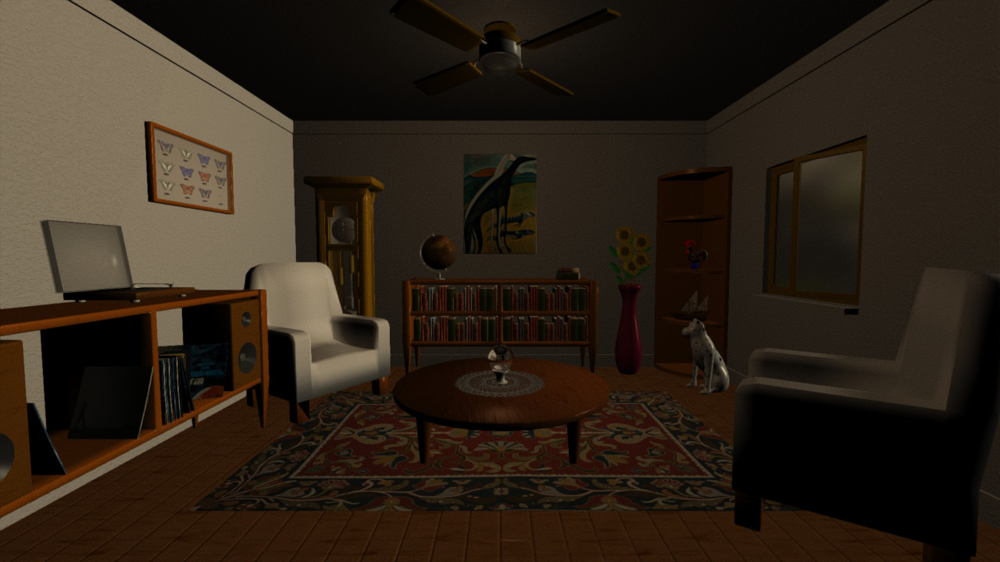
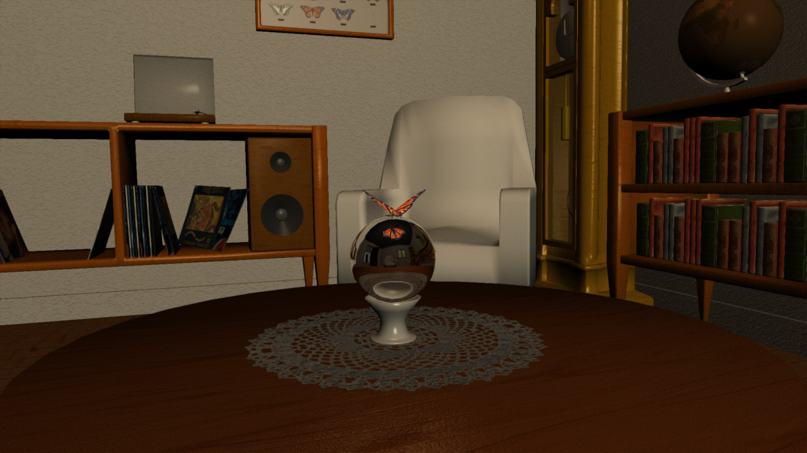
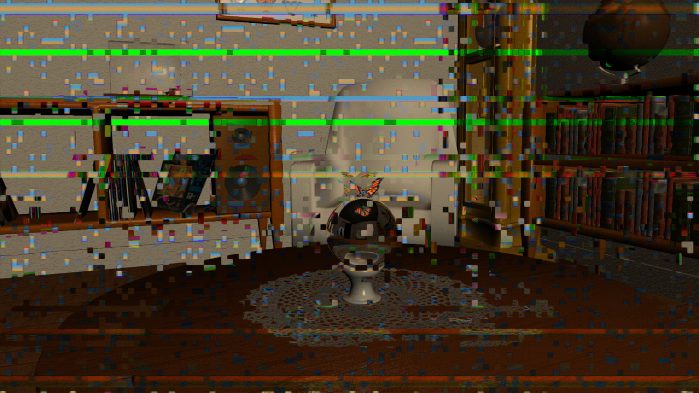
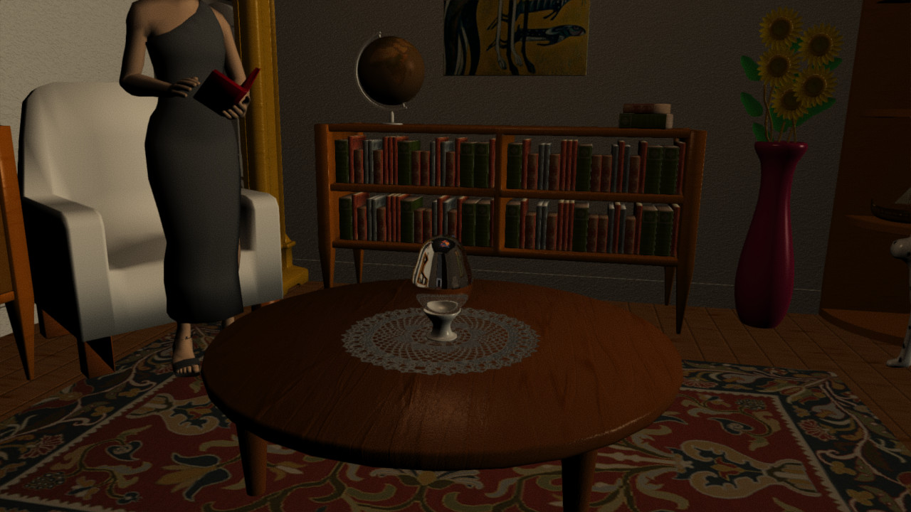
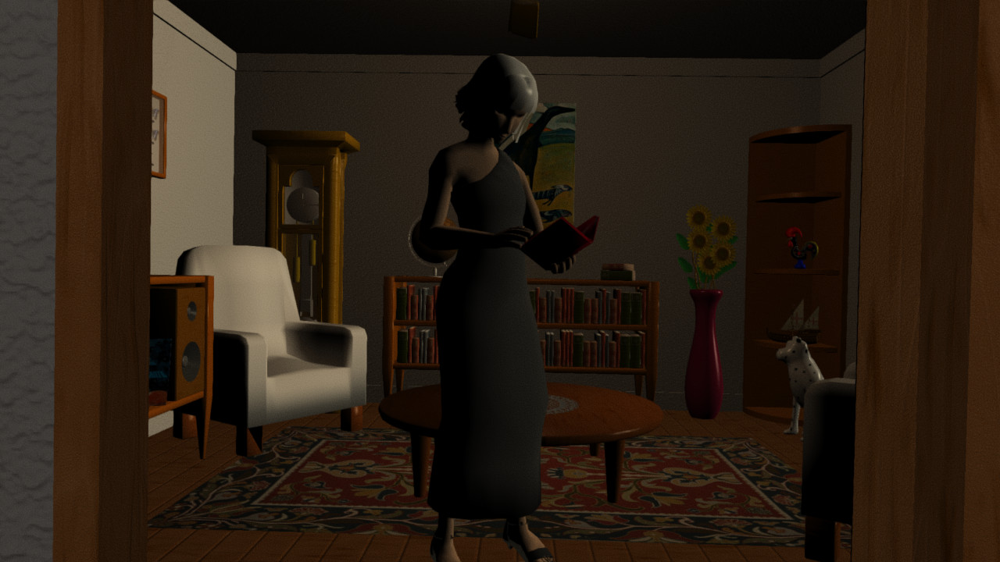
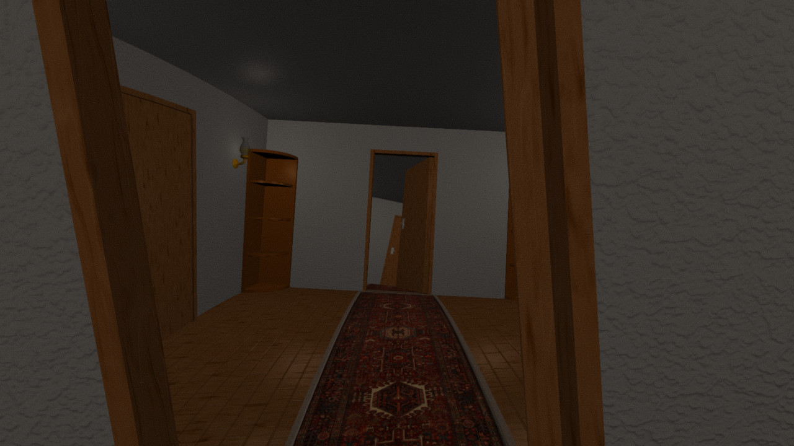
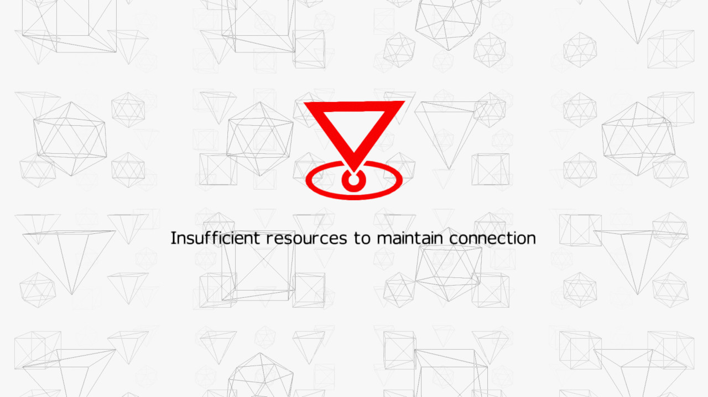

Back to works listing
Evoke Project
Unfinished for Evoke 2017 demoparty, with a surreal and cyberpunk plot.
The Room and the Butterfly

Fig. 1 - Dynamic lighting, multiple light sources, automatic material/shader generation with bumpmapping.

Fig. 2 - Cubemap reflections in realtime applied to the metaball.

Fig. 3 - Video corruption effect.
The Reader

Fig. 4 - Skinned character with bone animations, metaball capturing butterfly.

Fig. 5 - Exiting to corridor.
The Corridor

Fig. 6 - Infinite corridor with transform effects (rotation along the Y-Axis per vertex).
Disconnecting from server

Fig. 7 - The error message.
Notes
Thanks for Jaerder for the help with modelling, Jeenio and PS for the music.